Stem borer (Lepidoptera: Tortricidae) in Teucrium
| Record no.: | 0568 |
|---|---|
| Feeding guild: | Stem borer |
| Taxonomy: | Lepidoptera: Tortricidae: Olethreutinae |
| Stages observed: | trace, larva, pupa, adult |
| Distribution observed: | IA |
| Hosts in Teucrium: | T. canadense (germander) |
Examination of upper stems affected by this borer will reveal large amounts of compacted frass filling the hollow stem interior, while the lower reaches of stem, also fed upon by the larva, show relatively little frass accumulation, suggesting the larva is purposeful about keeping the lower stem tidy and storing most of its frass in a "latrine" as high in the stem as possible. The larva feeds on the pith in the interior of the stem; in some cases, the available pith may consist of little more than a thin layer lining the inner wall of the hollow stem, in which case the larva feeds by scraping away this layer of tissue.
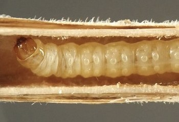
The larva moves from internode to internode by tunneling through the thin wall of tissue at each node. It passes the winter in the lower portion of the dead stem close to ground level. In spring it pupates in the dead stem and adults emerge shortly thereafter. Larvae of the new generation may be active in living stems at least as early as mid-July, based on the finding in 2021 of a young caterpillar in the pith of a stem on July 15 (this larva was not photographed and is thus not shown in the images below).
Both Endothenia hebesana and E. nubilana have been previously reported from Teucrium (Hall et al. 2024; Lam et al. 2011; Miller 1983). The origin of at least some of these reports appears to be work done in Illinois in the 20th century by M. Glenn, who reared E. nubilana as a "root borer" and E. hebesana as a stem borer both from Teucrium (Godfrey et al. 1987). My brief review of images of moths assigned to these two species on Moth Photographers Group (2024b&c) and BugGuide (VanDyk 2026) did not immediately suggest a match with the adults I reared from Teucrium, although the plumages in those references were in some cases quite variable within a species. Also, overwintering larvae of E. hebesana observed in other hosts in the current study showed a different body color and a much darker head capsule than the current larvae from Teucrium. However, I have also observed a larva I believed to be E. hebesana tunneling in a living stem of Teucrium in midsummer (record 0728).
The species-level identity of the present Teucrium borer remains undetermined.
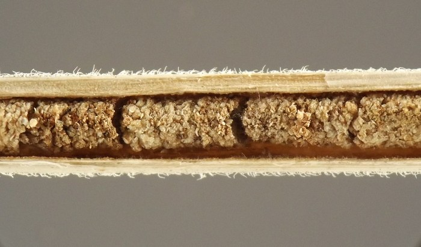
 Prev
Prev
{kind=link}
{kind=link}
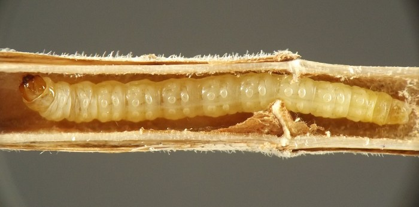
{kind=link}
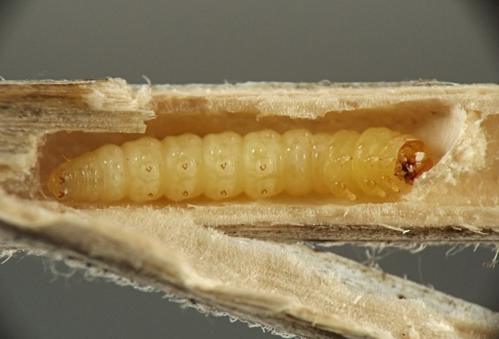
{kind=link}
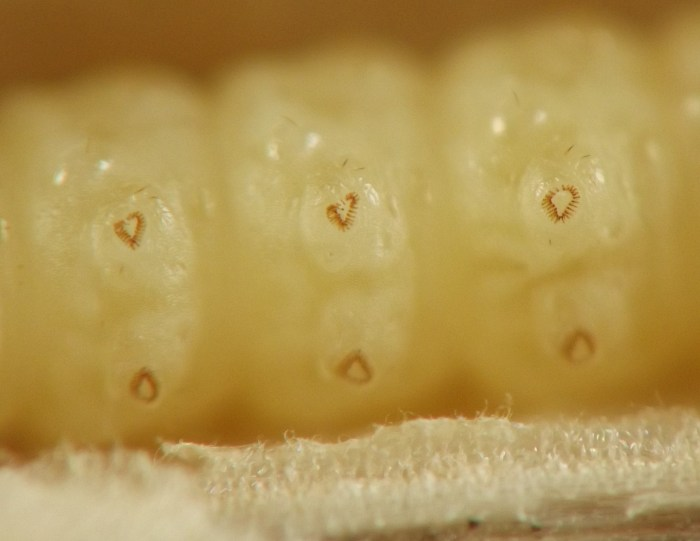
{kind=link}
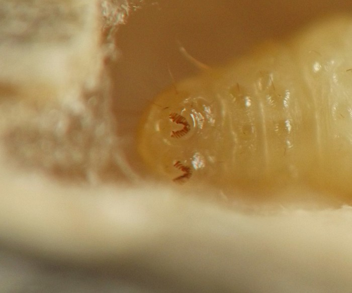
{kind=link}
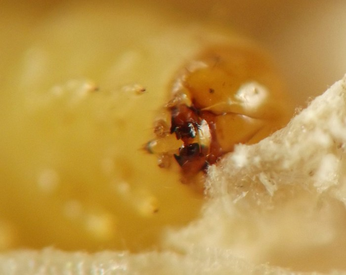
{kind=link}
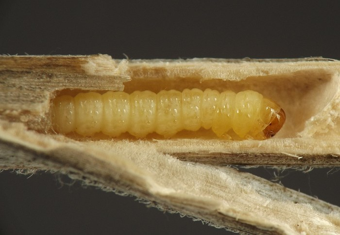
{kind=link}
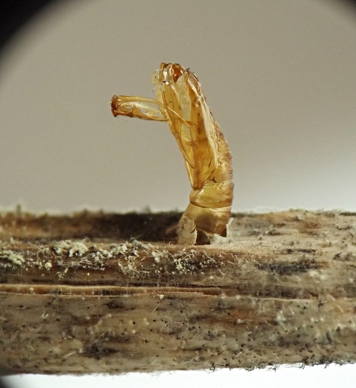
{kind=link}
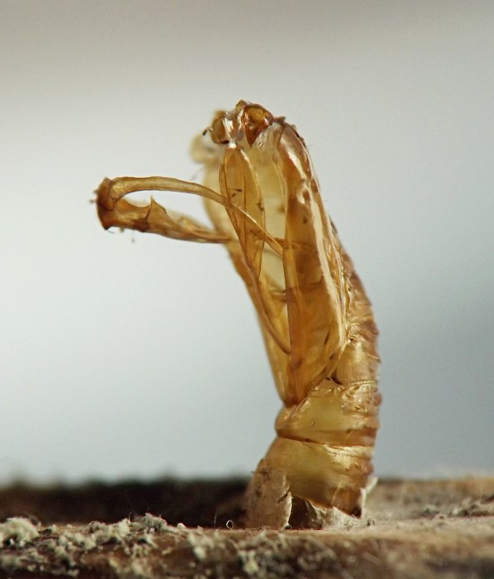
{kind=link}
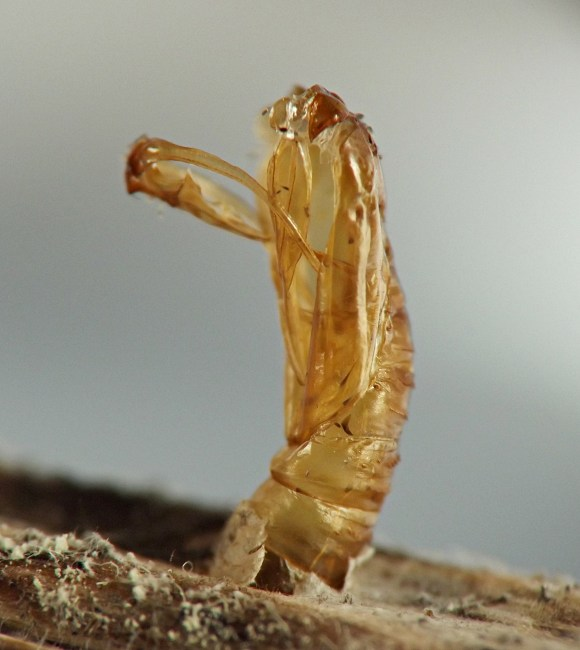
{kind=link}
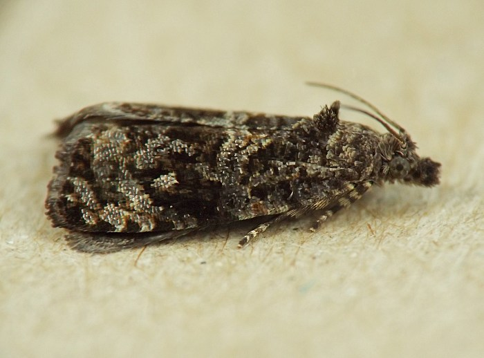
{kind=link}
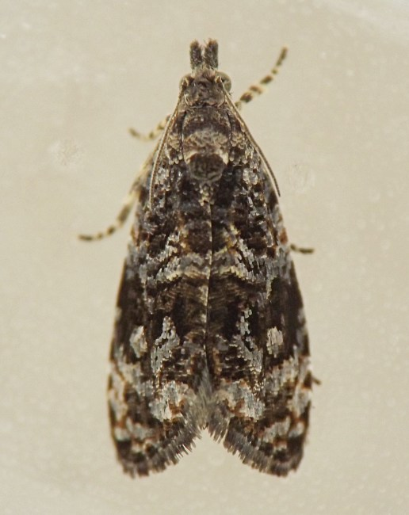
{kind=link}
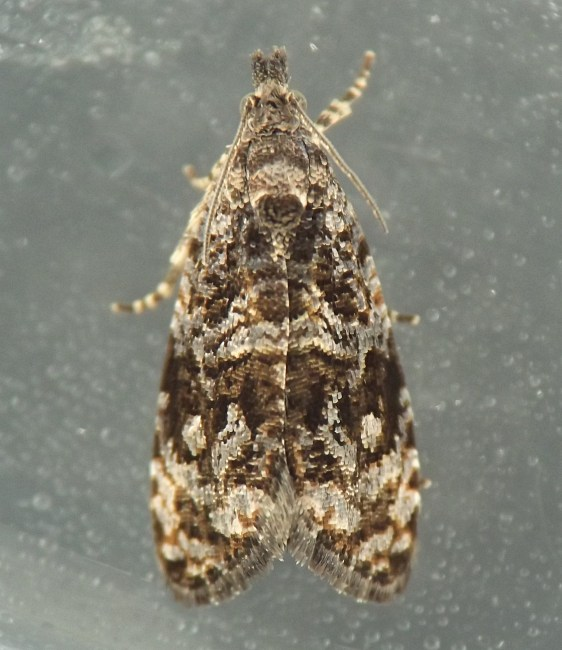
{kind=link}
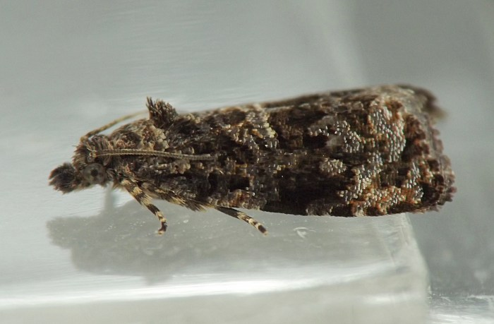
Coll. 02/18/23, photo same day (01); coll. 04/18/23, larva photo same day (02), adult em. 05/17/23, photos of adult on emergence day (11-14); coll. 05/10/23, photos same day (03-07); coll. 05/16/23, adult em. 05/28/23, photos of pupal exuviae on emergence day (08-10).
- Godfrey, G.L., Cashatt, E.D., and M. Glenn. 1987. Microlepidoptera from the Sandy Creek and Illinois River region: an annotated checklist of the suborders Dacnonypha, Monotrysia and Ditrysia (in part) (Insecta). Illinois Natural History Survey, Special Publication 7.[return to in-text citation]
- Hall, S.P., Sullivan, J.B., Petranka, J.W., Feldman, T., George, D., Niznik, J., Backstrom, P., and T. Howard. 2024. The Moths of North Carolina. Raleigh (NC): North Carolina Biodiversity Project and North Carolina State Parks. Retrieved November 19, 2024 from https://auth1.dpr.ncparks.gov/moths/index.php.[return to in-text citation]
- Lam, W.H.Y., Rota, J., and J.W. Brown. 2011. A preliminary list of the leaf-roller moths (Lepidoptera: Tortricidae) of Virginia. Banisteria 38: 3-37.[return to in-text citation]
- Miller, W.E. 1983. Nearctic Endothenia species: a new synonymy, a misidentification, and a revised status (Lepidoptera: Tortricidae). The Great Lakes Entomologist 16(1): 5-12.[return to in-text citation]
- Moth Photographers Group. 2024b. Endothenia hebesana (Walker, 1863). Retrieved November 19, 2024 from https://mothphotographersgroup.msstate.edu/species.php?hodges=2738. [return to in-text citation]
- Moth Photographers Group. 2024c. Endothenia nubilana (Clemens, 1865). Retrieved November 19, 2024 from https://mothphotographersgroup.msstate.edu/species.php?hodges=2743.
- VanDyk, J., ed. 2026. Species Endothenia nubilana - Cloudy Endothenia - Hodges#2743. Images page at BugGuide.net. Retrieved February 1, 2026 from https://www.bugguide.net/node/view/173582/bgimage.[return to in-text citation]
Page created: November 15, 2023. Last update: none